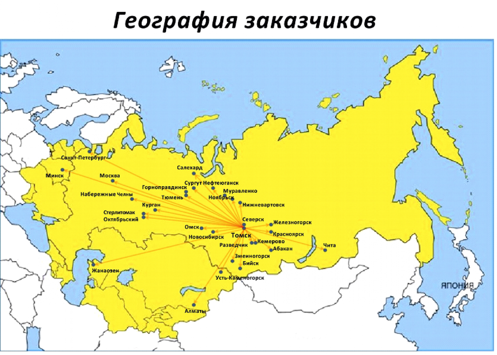

Заказчики
Горнодобывающие и нефтесервисные компании, геологоразведка, атомная отрасль и водоканалы.

География поставок
Приборы работают на угольных разрезах Кузбасса, урановых месторождениях Забайкалья, в нефтесервисе Западной Сибири и на объектах атомной отрасли.
Список заказчиков
- НПЦ по геологииРеспублика Беларусь, г. Минск
- АО «КузбассРазрезУголь»г. Кемерово
- АО «Сибирский химический комбинат»г. Северск
- АО «Сибирское ПГО»г. Красноярск
- АО «Узбекгеологоразведка»Республика Узбекистан, г. Ташкент
- АО «Узеньпромгеофизика»Республика Казахстан, г. Жанаозень
- АО «Хиагда»г. Чита
- ГБУ «Мосгоргеотрест»г. Москва
- МП «Томскводоканал»г. Томск
- ООО «Бурсиб-Н»г. Новосибирск
- ООО «Велко»г. Москва
- ООО «Газпромнефть НоябрьскНефтегазГеофизика»г. Ноябрьск
- ООО «Геомайн»г. Кемерово
- ООО «Ленинск-Кузнецкая геофизическая партия»г. Ленинск-Кузнецкий
- ООО «Октябрьский завод каротажного оборудования» ВНИИГИСг. Октябрьский
- ООО «Распадская угольная компания»г. Новокузнецк
- ООО «Техногео»Скважинные приборы электрического каротажа
- ООО «Юганскнефтегазгеофизика»г. Нефтеюганск
- ООО «Южно-Кузбасское ГРУ»г. Новокузнецк
- ТОО «Акпан»Республика Казахстан, г. Актобе
- ФГУП «ГидроСпецГеология»г. Москва
- ФГУП «НО РАО», Железногорский филиалг. Железногорск